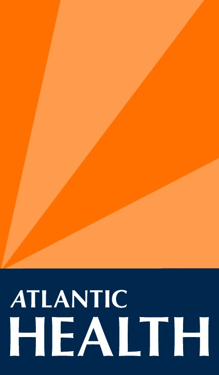
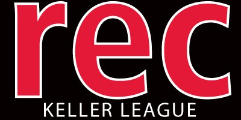

WORK EXPERIENCE
Atlantic Health Systems
Atlantic Health Systems
My position on the Atlantic Health team was an Information Support Specialist which dealt with educating our patients and visitors about the various health technology resources available to them to help lead a healthier lifestyle. Products ranged from Activity Trackers to Wireless blood pressure monitors as well as many apps available to them on the App Store/Google Play Store.
I also played a role in the development and support of the wayfinding application Take Me There - Overlook. I helped/advised in the testing of the wayfinding application in its pre- release phase and monitored any changes or updates that needed to be made post-release.

Weekend Student Adventures
During my study abroad experience I decided to take an internship with Weekend Student Adventure or WSA. Their initiative was to provide package trips to students such as myself studying abroad for an affordable price and included everything from hostels to activities, all they had to do was arrange their own way of get to and from the destination. My role on the team was to maintain the companies social media pages by posting effective updates about trips to branch the brand to multiple countries across Europe. I worked with the WSA team across the countries to collectively determine cost effective advertisement campaigns. I also had the opportunity to work on their iOS application where I provided the app developers with extensive outlines for content within the WSA app and gave feedback on errors that needed updating/fixing.

The Keller League
The Keller League is a Rutgers owned fraternity intramural organization. We set up different sporting tournaments exclusively for the fraternaties at Rutgers. I started out as a data tracker which required me to actively record data that the league required play by play as well as keep efficient notes pertaining to infractions and misconduct for weekly reports. I eventually worked my way up to become league supervisor which gave me the responsabilities of ensuring proper and efficient function of the staff as a whole to deliver the most effective experience for clients. I also held weekly meetings with office staff to ensure all paper work required for the league was in order and ready for use and uploaded into our database.